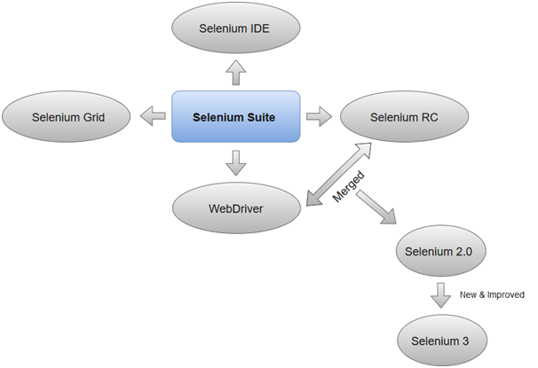
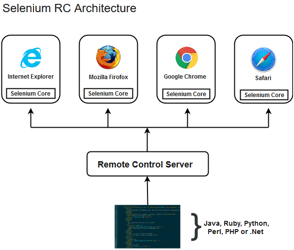

Selenium Tool Suite
@-Selenium is not just a single tool but a suite of software, each with a different approach to support automation testing. It comprises of four major components which include:
1-Selenium Integrated Development Environment (IDE)
2-Selenium Remote Control (Now Deprecated)
3-WebDriver
4-Selenium Grid

1.Selenium Integrated Development Environment (IDE)
Selenium IDE is implemented as Firefox extension which provides record and playback functionality on test scripts. It allows testers to export recorded scripts in many languages like HTML, Java, Ruby, RSpec, Python, C#, JUnit and TestNG. You can use these exported script in Selenium RC or Webdriver.
Selenium IDE has limited scope and the generated test scripts are not very robust and portable.
2. Selenium Remote Control
Selenium RC (officially deprecated by selenium)allows testers to write automated web application UI test in any of the supported programming languages. It also involves an HTTP proxy server which enables the browser to believe that the web application being tested comes from the domain provided by proxy server.
Selenium RC comes with two components.
1-Selenium RC Server (acts as a HTTP proxy for web requests).
2-Selenium RC Client (library containing your programming language code).
@-The figure given below shows the architectural representation of Selenium RC.

Selenium RC had been considered quite effective for testing complex AJAX-based web user interfaces under a Continuous Integration System.
3. Selenium WebDriver
Selenium WebDriver (Selenium 2) is the successor to Selenium RC and is by far the most important component of Selenium Suite. SeleniumWebDriverprovides a programming interface to create and execute test cases. Test scripts are written in order to identify web elements on web pages and then desired actions are performed on those elements.
Selenium WebDriver performs much faster as compared to Selenium RC because it makes direct calls to the web browsers. RC on the other hand needs an RC server to interact with the web browser.
Since, WebDriver directly calls the methods of different browsers hence we have separate driver for each browser.
@ Some of the most widely used web drivers include:
1-Mozilla Firefox Driver (Gecko Driver)
2-Google Chrome Driver
3-Internet Explorer Driver
4-Opera Driver
5-Safari Driver
6-HTML Unit Driver (a special headless driver)
4. Selenium Grid
Selenium Grid is also an important component of Selenium Suite which allows us to run our tests on different machines against different browsers in parallel. In simple words, we can run our tests simultaneously on different machines running different browsers and operating systems.
Selenium Grid follows the Hub-Node Architecture to achieve parallel execution of test scripts. The Hub is considered as master of the network and the other will be the nodes. Hub controls the execution of test scripts on various nodes of the network.